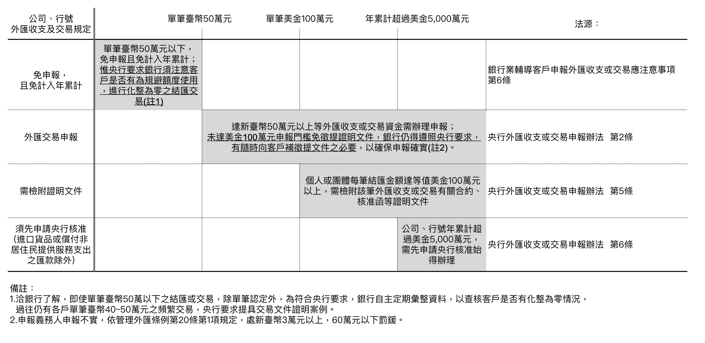

外幣資金調度實務

聚焦在外幣資金調度，包含：外幣資金調度決策因素、外匯利率避險規劃、主要交易工具、外匯交易申報及國際金流。
惟現金收支預測、應收應付帳款管理，及稅務規劃，須依據個別公司不同財會政策及投資屬性考量，不在此進行說明。
選單書籤列表
一. 財務資金調度決策
1. 資金調度決策規劃與訂定
2.資金不足之融通方式
3.資金剩餘之運用途徑
二. 外匯避險規劃
1.資產負債管理
2.外匯避險承作考量
3.外匯主要交易工具
4.風險管控
三. 外匯交易申報
1.法規條文
2.結售購匯限制
四. 國際金流介紹
1.SWIFT介紹
2.國際匯款金流
3.SWIFT電文類別
五. 金融市場簡介
1.金融體系運作的分類
2.以期限長短區分
3.以交易方式區分
4.以請求權的優先順序區分
5.以流通順序區分
6.以交易場所區分—集中市場與店頭市場
7.以交割時間區分
====================================
項目一. 財務資金調度決策
1. 資金調度決策規劃與訂定
＊ 弭平資金缺口
- 營運資金需求：支付員工薪資、供應商款項或其他營運成本等資金需求。
- 投資資金需求：企業設備更新、擴建、開發新產品或進入新市場等大量資金需求，超出目前的資金儲備。
- 外部環境變化：匯率波動、市場需求變化、政策法規調整等外部因素導致企業面臨資金缺口。
- 不良應收帳款：如果客戶拖欠款項或者發生壞帳，企業資金流受到影響，所導致資金缺口。
- 其他錯配風險：資產錯配、貨幣錯配、期限錯配所造成的資金缺口。
＊ 降低債務資金成本、增加資金運用效益
- 彙整集團資源、洽談授信額度、統一定價、集中管理。
＊ 長、短期借款規劃
- 依公司股利發放、擴建案資本支出等計畫，制定不同籌資計畫。
＊ 外匯、利率等市場風險管理
- 分析外匯、利率市場波動，搭配衍生性商品工具，降低曝險部位。
＊ 資產負債配置：
- 配合外匯、利率市場走勢變化、適時調整資產負債配置。
2. 資金不足之融通方式
＊ 短期貸款(台幣)
- 短期無擔保授信、資產擔保或質押授信。
- 短期票券循環融資(NIF, Note Issuance Facility)
銀行提供一個長期可循環使用票券發行額度，企業可以在此期限內選擇適宜時點，發行銀行承兌匯票或商業本票來向市場籌措資金。
- 承諾承銷中長期利率商業本票(FRCP,Fixed/Floating Rate Commercial Paper或UCCP, Underwriting Committed Commercial Paper)
票券商辦理商業本票簽證、承銷業務，得與發行客戶約定以議定利率到期續發方式循環發行商業本票，其約定期間得超過一年，稱為中長期利率商業本票。
✔️ 銀行授信注意事項：
- - 銀行授信限制（
銀行法第三十三條之三授權規定事項辦法
）：
§ 銀行對同一法人之授信總餘額，不得超過該銀行淨值百分之十五，其中無擔保授信總餘額不得超過該銀行淨值百分之五。
§ 銀行對同一關係企業之授信總餘額不得超過該銀行淨值百分之四十，其中無擔保授信總餘額不得超過該銀行淨值之百分之十五。
- - 關係企業認定：
銀行法與公司法認定之關係企業差異
。
- - 利害關係人：
銀行法-利害關係人認定
、
金管會-利害關係人授信規定解釋令
。
＊ 貿易融資(外幣)
- 進口貿易融資、出口貿易融資、採購融資。
＊ 關係企業往來借款(台幣或外幣)
- 公司法規範之關係企業(有控制與從屬關係之公司、相互投資之公司)間之資金貸與。
- 資金貸與相關法規：
公開發行公司資金貸與及背書保證處理準則
、
資金貸與函釋內容
、
公開發行公司資金貸與及背書保證處理準則問答集
、
台灣證交所 案例說明
。
＊ 長期貸款(台幣或外幣)
- 長期單貸案、聯貸案、公司債發行，通常信用評級較差之公司，會透過信用評級較高之關係企業進行擔保融資。
- 關係企業背書保證之借款：替關係企業提供保證，使其取得較優惠之貸款條件。惟注意保證費收取要符合
營利事業所得稅不合常規移轉訂價查核準則
。
其他形式保證：
- - 承諾函(Letter of Commitment)：
出具人向貸款人承諾，在借款人償還全部貸款本息之前，出具人將保持其在借款人公司中的股權，
或者承諾項目發起人在借款人公司中股權下降至某一比例時，項目發起人應向貸款人出具一份具有實質性保證的保函。
具有法律強制執行力，若違反保函約定時，承擔相應違約之法律責任。
- - 支持函(Letter of Support)，或稱安慰函（letter of comfort）：
出具人向貸款銀行表示，將在各方面對借款人償還到期貸款予以支持的意思表示。支持函的效力須取決於出具人對償還貸款所表示的支持程度。
支持函並不具有強制執行力，意即不適用移轉訂價相關規定，可不需向受支持的關係企業進行收費。
- - 知悉函(Letter of Acknowledgement)：
出具人只表明其對有關貸款的知悉和同意，並無規定出具人負有關責任的實質性內容。
法律約束力較小，貸款銀行不能依此要求出具人承擔任何法律責任。
＊ 衍生性商品工具
- 換匯換利交易。
3. 資金剩餘之運用途徑
✔️ 注意營利事業分離課稅規定： 所得稅法 第 24 條
＊ 活期存款
- 申請優惠利率。
＊ 定期存款
- 依據後續資金動用規劃辦理特定天期之定期存款。
＊ 買入短期票券、免保商業本票
- 買入期限在一年期以內之短期票券(銀行定存單、國庫券、銀行承兌匯票等)。
＊ 附買回交易
- 與證券商約定承作利率及天期進行，證券商於到期時依約定買回該債券，客戶不承擔債券價格波動之風險。
＊ 貨幣型基金
- 通過銀行、投信公司或券商購買基金。
＊ 結構式存款
- 結合「 定期存款 」及「 衍生性金融商品 」的投資工具，透過原本要支付給投資人的利息投資在選擇權部位上，以期可能達到提高收益之目的。
＊ 償還關係企業借款
- 依雙方簽訂之借款合約(短期或長期、循環或非循環、外幣姐款之兑盈損分攤)，於適切時點清償借款。
＊ 償還銀行短期貸款
- 配合集團整體之銀行授信額度規劃，償還部分借款，將銀行資源留用給更需要的集團內其他公司。
4.金融市場主要利率參照
＊ 美元
- 有擔保隔夜融資利率(SOFR)-有擔保，參考： 芝商所期限SOFR參考利率簡介 。
＊ 歐元
- 歐元短期利率(€STR)-無擔保，參考：
European Central Bank - eurosystem
。
- 歐元銀行同業拆借利率(EURIBOR)，
Euribor
。
＊ 英鎊
- 英鎊隔夜平均指數(SONIA)-無擔保，參考： SONIA interest rate benchmark 。
＊ 日元
- 東京隔夜平均利率(TONAR)，參考：
TONA Averages
。
- 東京銀行同業拆借利率(TIBOR)-無擔保，參考：
JBA TIBOR
。
＊ 瑞士法郎
- 瑞士隔夜平均利率(SARON)-有擔保。
＊ 人民幣
- 香港銀行同業拆借利率(RMB HIBOR)，參考： 香港財資市場公會的美元兌人民幣(香港)即期匯率 、 TMA HIBOR 。
＊ 港元
- 香港銀行同業拆借利率(KHD HIBOR)，參考：
TMA HIBOR
。
- 港元隔夜平均利率指數(HONIA)，2019年2月，香港財資市場公會建議採用HONIA作為香港銀行HIBOR以外的另一個參考利率，
由於HONIA基於實際的交易資料而不是銀行提供的報價資料，所以較難被操控，且透明度較高。
＊ 台灣金融市場
- 有擔保隔夜融資利率(TAIFX3定盤利率)。
- 台北金融業拆款定盤利率(Taipei Interbank Offered Rate, TAIBOR)，銀行公會湯森路透公司計算國內15家主要銀行所提供同業間無擔保拆款之報價利率。
計算方法：刪除各期別最高與最低各占總報價銀行家數4分之1的報價利率後，取中間占總報價銀行家數4分之2報價利率的簡單平均值，計算出各期別定盤利率。
- 臺灣短期票券報價定盤利率(Taiwan Bills Index Rate, TAIBIR)，票券金融商業同業公會委託臺灣集中保管結算所編製。
計算方法：報價機構所報的各天期利率由高至低排序，剔除各天期最高及最低的5分之1後，利用簡單平均計算定盤利率。
項目二. 外匯、利率避險規劃
1. 資產負債管理
＊ 自然避險
- 利用自身業務運作，來抵銷匯率波動所帶來的匯率曝險部位之兑盈損變動，包括調整資產(含應收)、負債(含應付)部位，不需要使用金融衍生品或其他外部工具。
- 直接通過企業內部的資產負債結構來降低匯率波動對企業的影響。
e.g.,台積公司舉借外幣銀行借款以規避投資海外子公司所產生之匯率風險，並指定為國外營運機構淨投資避險。
＊ 持有強勢貨幣資產
- 當市場看漲某一種貨幣，藉由增持該種貨幣資產，於財務報表匯兌評價時，達到評資產增值之目的。
＊ 借入弱勢貨幣負債
- 當市場看跌某一種貨幣，藉由增加該種貨幣負債，於財務報表匯兌評價時，達到評負債減損之目的。
2. 財務避險承作考量
＊ 法源依據
- 公開發行公司取得或處分資產處理準則、從事衍生性商品交易管理辦法。
＊ 避險工具選擇
- 直接避險、間接避險，是否適用避險會計，財報揭露項目。
＊ 公司意願及評價考量
- 定期基於市值或其他客觀標準決定的公允價值對資產或負債進行平價。
＊＊ 台塑集團財務風險管理<風險管理政策>
- 財務風險：包含因利率、匯率等波動產生之市場風險，交易對象之信用違約風險，及無法將資產變現或取得足夠資金、市場交易量不足之流動性風險等。
- 不做高槓桿投資，並制定「資金貸與他人辦法」、「背書保證作業程序」、「從事衍生性商品交易處理程序」及「外匯交易及風險管理辦法」等制度，據以辦理
各項財務作業，降低財務相關風險。
- 關係人資金貸與或為關係人向銀行借款出具之支持函，均須事前評估，且應經審計委員會與董事會審議通過。
＊＊ 台積電財務風險管理<台積年報>
- 本公司管理外幣匯率風險、利率風險、權益工具價格風險、信用風險及流動性風險等，以降低市場之不確定性對公司財務績效之潛在不利影響。
- 本公司之重要財務規劃，均經審計暨風險委員會及/或董事會依相闢規範及內部控制制度進行覆核。本公司於執行財務計劃時，均恪遵整體財務風險管理及
權責劃分之相𨶙財務準則。
3. 外匯主要交易工具
＊ 即期外匯 Spot
- 買賣雙方在交易後2個銀行營業日內完成清算交割。
＊ 遠期外匯 Forward
- 買賣雙方約定於未來一定時間(>2個銀行營業日)，按約定之遠期匯率完成清算交割。
＊ 無本金交割遠期外匯 Non Delivery Forward
- 買賣雙方約定於未來一定時間，不需清算交割本金，就原定之遠期匯率與比價日之即期匯率進行差額交割。
＊ 換匯交易 FX Swap
- 即期對遠期：一筆即期＋賣一筆遠期外匯交易組合。
- 遠期對遠期：一筆遠期＋賣一筆遠期外匯交易組合。
＊ 利率交換 Interest Rate Swap
- 遠期合約，交易雙方以不同的利率指標（含浮動、固定利率）作為交換標的，定期交換利息，利息收付頻率依雙方約定，契約期限原則上最短1年。
＊ 換匯換利 Cross Currency Swap
- 遠期對遠期：交易雙方於期初交換兩種幣別的本金，並在約定期間內（市場慣例為1年以上）定期交換衍生出來的利息，到期時再以相同匯率換回本金。
＊ 選擇權 Option / 期貨 Futures
- 買權(CALL)指選擇權的買方支付權利金給賣方，買方有權在約定日期，依履約價買入約定數量之貨幣，但無義務一定要執行該權利。
- 賣權(PUT)指選擇權的買方支付權利金給賣方，買方有權在約定日期，依履約價賣出約定數量之貨幣，但無義務一定要執行該權利。
- 選擇權基本策略有4種：買入買權(BUY CALL)、賣出買權(SELL CALL)、買入賣權(BUY PUT)、賣出賣權(SELL PUT)。
- 遠期外匯交易:係指客戶約定在交易日後兩個營業日以上的某一特定日期或期間，按事先約定的匯率，以一種貨幣買賣另一種特定金額貨幣之外匯交易。
- 遠期外匯匯率之計算：遠期外匯匯率(FX Forward Rate) = 即期匯率(Spot Rate) + 換匯點數(Swap Points)。
4. 風險管控
＊ 市場風險
- 又稱爲系統風險(systemnatic risk)，指的是整個大環境影響所有投資標的報酬率之風險。
＊ 政治風險
- 因政治環境之不穩定性及政策執行之不連續性，而對投資報酬率所造成之影響。
＊ 匯率風險
- 指投資標的之價值會因當地國家幣值孌動而導致報酬之不確定性。
＊ 利率風險
- 因市場利率變動而導致預期投資報酬率變動之風險。
＊ 通貨膨脹風險
- 又稱爲購買力風險，指的是未來所賺取之收益小於現今收益之購買力。
＊ 信用風險
- 又稱爲違約風險(default risk)指的是契約任一方不執行約定內容之義務，而導致損害另一方權益之風險。
＊ 作業風險
- 因內部作業、人員及系統之不當與失誤，或其他外部作業與相關事件，所造成損失之風險。
＊ 法律風險
- 法規因素所引致的由企業違法、承擔潛在經濟損失或其他損害的風險。
＊ 國家風險
- 於國家的主權行為所引起的造成損失的可能性：拒絕履約、拒絕擔保。
＊ 流動性風險
- 流動性係指投資標的轉換爲現金之能力。當市場成交量不足或缺乏願意交易的對手，會導致資產無法於短期內以合理價位售出之風險。
＊＊ 台塑及台積公司風險揭露：
項目三. 外匯交易申報
1. 法規條文
- 台灣央行_外匯收支或交易申報辦法(111.12.26 修正發布 112.1.1生效)
- 台灣央行_匯出、入匯款之分類及說明
- 台灣央行_銀行業輔導客戶申報外匯收支或交易應注意事項(111.12.26 修正發布 112.1.1生效)
- 台灣央行_銀行業辦理外匯業務作業規範(111.1.19生效)
- 外匯市場交易準則
2. 結售購匯限制
＊ 央行主要職責是維持該國貨幣穩定性與供給，包括：控制貼現率與準備金利率、管理外匯存底以及穩定金融市場。
＊ 新台幣與外幣間之買賣，涉及外匯收支時，中華民國境內新台幣50萬元以上等值外匯收支或交易之資金所有者或需求者應依據規定申報。
＊ 公司每筆結匯金額達100萬美元以上之匯款，個人每筆結匯金額50萬美元以上之匯款，應檢附與該筆外匯收支或交易有關合約，核准函等證明文件，
經銀行確認與申報書記載事項相符後，始得辦理新台幣結匯。
＊ 分公司、行號每年累積結購或結售金額之額度各為5,000萬美元，團體、個人每年累積結購或結售金額之額度各為500萬美元。
但公司、行號、團體及個人出口/進口貨品或對非居住民提供服務收入/支出之匯款，不計入其當年累積結匯金額。

項目四. 國際金流介紹
1. 環球銀行金融電訊協會SWIFT(Society for Worldwide Interbank Financial Telecommunication)
- 國際性的訊息傳遞系統，不涉及資金清算。
- 世界級金融電文網路，銀行和其他金融機構通過它與同業交換電文完成金融交易；
- 總部設在比利時的布魯塞爾之間非盈利的國際合作組織，管理層由25個董事組成。
- SWIFT Code由8或11個字符組成，並可分拆成4個部分，用於識別銀行機構、國家、位置及分行，可直接Google查詢：
- - 銀行代碼｜4 個字母（A-Z）｜代表銀行機構，通常像是該銀行名稱的縮寫；
- - 國家代碼｜2 個字母（A-Z）｜代表該銀行所在的國家／地區；
- - 位置代碼｜2 個字符（A-Z / 0-9）｜代表該銀行的總部位國；e.g.,CITIUS33、CITITWTP。
- - 分行代碼｜3 個字符（A-Z / 0-9）｜代表該銀行的指定分行，e.g.,BKTWTWTP106。如代碼留空或填上 “XXX” 則代表為銀行的總部
G10貨幣：USD、EUR、GBP、JPY、CAD、SEK、CHF、AUD、NEZ、NOK。
1. 各國主要清算系統
- 不同國家或地區金融體系遵循不同的交易系統，匯款時得按照收款賬戶所在地標準，填寫有關識別代碼。
1). 紐約銀行間清算系統 (CHIPS)
- 限於紐約當地的銀行、美國其他地區及外國銀行設在紐約有經營外匯業務的分支機構、分行或通匯銀行，SWIFT電文以//CPxxxx表示。
2). 美國聯邦準備資金調撥系統(簡稱FED Wire)
- 由美國聯邦儲備銀行FED所開發的電子轉賬系統，為美國境內及來自境外匯款提供轉賬及清算服務，會員參加美國銀行公會(ABA)，會員號碼簡稱 ABA No.。
- FedWire Number（又稱為ABA No./Routing No.）用作於識別美國不同的銀行或金融機構，ABA no.有九碼，SWIFT電文以//FWxxxxxxxxx表示。
- 國際匯款也可以透過ABA，但要註明走FED WIRE，一般而言，國際匯款到美國走SWIFT就可以到。
3). 美國聯ACH(Automated Clearing House)代收代付業務(簡稱ACH轉帳)
- 銀行存款進行自動轉帳的功能，由美國自動結算所（Nacha）營運的電子轉賬系統，為美國處理銀行匯款的主要系統。
4). 台灣財金平台(簡稱RTGS, Real Time Gross Settlement)
- 由財金公司所提供之跨行金融資訊系統，進行金融機構間新台幣或外幣匯款資金撥轉服務，匯款作業截止時間為當日下午3:30。
- 若要透過RTGS進行外幣資金結算幣別(美元、人民幣、日圓、歐元及澳幣)收付，則要匯出與收款銀行，皆需參加財金平台之該幣種結算業務。
5). 歐洲IBAN國際銀行賬戶號碼(International Bank Account Number)
- 識別與跨境交易有關的銀行賬戶，應用在與歐盟或歐洲有關的國際交易，由最多34個字母和數字組成：
- - 國家代碼｜2 個字母（A-Z）；
- - 查核號碼｜2 個數字（0-9）；
- - 賬戶號碼｜最多 30 個數字（0-9）。
6). 英國清算所自動付款系統(簡稱 CHAPS)
- 英國銀行間電腦清算網路，SWIFT電文以//SCxxxxxx 表示。
7). 中國人民銀行支付系統 (簡稱 CNAP)
- 主要用於人民幣的跨行支付和清算，SWIFT電文帳號12位數字組成，包括3位數的銀行代碼＋ 4位數的城市代碼＋ 4位數的銀行編號＋ 1位數的校驗碼。
2. 國際匯款金流
- 國際匯兌電文流程:
- MT103:銀行承做個人或公司匯款電文，匯款人或受款人其中一方非金融機構，或雙方均非金融機構之匯款電文，非轉帳工具僅押碼資訊傳輸。
電文格式: SWIFT MT103 Message Reference Guide - MT202:為銀行間之匯款電文，Cover Payment清算，作為MT103 匯款電文中對解款行補償。
電文格式: SWIFT MT202 Message Reference Guide - 存匯行
情況 解款行為匯款行之存匯行 解款行為受款人之設帳行 步驟 1a 是 是 - 由匯款行拍發一通 MT103 電文給其存匯行(解款行)，請存匯行依電文指示將款項解付給受款人，完成匯款程序。解款行僅需做內部轉帳。 1b 是 否 - 先由匯款行拍發一通 MT103 電文給其存匯行(解款行)。 - 再由存匯行拍發一通 MT103 電文給受款人之設帳行，請受款人設帳行依電文指示解付款項。解款行僅需做內部轉帳。 1c 是 否 - 先由匯款行拍發一通 MT103 電文給其存匯行(解款行)。 - 再由存匯行拍發一通 MT103 電文給中間銀行(受款人之設帳行之存匯行)。 - 再由中間銀行拍發一通 MT103 電文給受款人設帳行，請受款人設帳行依電文指示解付款項。解款行與中間銀行僅需做內部轉帳。 - 匯款手續費
1. SHA（共同分擔費用）：
功能：由匯款人支付自己銀行的所有費用，而受款人支付其銀行的相關費用。中轉行的費用由發送方（匯款人）和接收方（受款人）共同分擔。
差別：這種方式下，雙方各自支付本地銀行的費用，而中轉行的費用則由匯款人和受款人平分。
2. BEN（受款人支付所有費用）：
功能：受款人支付所有相關費用，包括本地銀行和中轉行的費用。
差別：匯款人只支付匯款金額，並不支付任何附加費用。
3. OUR（全額到行）：
功能：匯款人支付所有相關費用，包括本地銀行和中轉行的費用，確保受款人收到的金額完全等於匯款金額。
差別：在這種情況下，匯款人承擔所有費用，確保受款人收到的款項不受任何扣減。
注意：大額JPY匯款不要指定OUR，因日資銀銀行會收取跨國日圓Lifting Charge，依照匯款金額0.05%收取且無金額上限,參考: SMBC收費標準 。
4. 全額到行：
功能：匯款人支付所有相關費用，確保受款人收到的金額完全等於匯款金額，類似OUR。
差別：收款行需收取匯入手續費用，仍需由受款人負擔，並得自匯款金額內扣除。
3. SWIFT電文類別
| 類別 | 描述 | 用途 |
|---|---|---|
| MT1XX | Customer Payment & Cheques | 客戶匯款及支票 |
| MT2XX | Financial Institution Transfer | 金融機構之匯款 |
| MT3XX | Financial Trading | 金融交易 |
| MT4XX | Collection & Cash Letters | 託收及光票業務 |
| MT5XX | Securities | 證券交易 |
| MT6XX | Precious Metals & Syndications | 貴金屬及聯合貸款 |
| MT7XX | Documentary Credit & Guarantees | 跟單信用狀及保證 |
| MT8XX | Travelers Cheques | 旅行支票 |
| MT9XX | Cash Management & Customer Status | 資金及客戶帳務處理 |
備註：退匯的MT199需要人工處理，考量紐約時差，若走MT199退匯，無法保證台灣當日入帳。
項目五. 金融市場簡介
1. 金融體系運作的分類
＊ 直接金融 (direct finance)
- 資金需求者本身發行憑證，直接交付資金供給者。
- 包括：債權債務憑證(商業本票、公司債等)，以及所有權憑證(股票)，
＊ 間接金融 (indirect finance)
- 由金融中介機構發行憑證取得資金供給者之資金，再借給資金不足者的資金融通方式。
- 包括：銀行借款(無擔保、有擔保等)，及其他使用銀行額度之商品工具(供應鏈融資、進口開狀、出口押匯等)。
- 直接與間接金融工具的資金成本不同，有時銀行額度利率較低且方便，唯銀行法有授信上限規定，應適時搭配使用發債等直接金融工具。
＊ 間接金融 (indirect finance)
2. 以期限長短區分
＊ 貨幣市場：拆款、票券
- 到期日在一年以內的金融工具發行與交易的市場，e.g.,可轉讓定期存單、商業/銀行承兌匯票、國庫券(甲、乙種)、拆款，及企業發行的商業本票。
＊ 資本市場：股市、債券
- 到期日超過一年的金融工具發行與交易的市場，e.g.,股票、公債、公司債、金融債券、不動產抵押權擔保債券、共同基金，及台灣存託憑證TDR。
3. 以交易方式區分
＊ 買賣斷交易
- 賣方提供商品向買方換取對等的現金後，交易便告結束。
＊ 附條件交易
- 交易時，約定一段時間後由買方以約定的價格再將商品賣回給賣方。
- 對賣方而言，稱為附買回交易(Repurchase Agreement)；對買方而言，稱為附賣回交易(ResaleAgreement或Reverse RP)。
- 對債券與票券自營商可以附買回協定取得資金，再以附賣回協定貸放資金，賺取利率差額。
4. 以請求權的優先順序區分
＊ 權益市場
- 一種平均分享企業淨值和淨利的請求權，無到期日，e.g.,股票、TDR等權益證券。
＊ 債務市場
- 債權工具是一種契約，規定發行者必須定期還本付息，e.g.,公司債、政府公債、國庫券，以及商業本票等債務工具。
- 企業進行價值分配時，債權工具持有人的優先順位高於股權工具持有人。
5. 以流通順序區分
＊ 初級市場(Primary Market)
- 又名發行市場，上市上櫃公司的有價證券，首次透過證券或票券承銷商代為發行的市場。
- 一般以＜證券公司＞為承銷機構，而商業本票等貨幣市場工具，則承銷機構為＜票券金融公司＞。
＊ 次級市場(Secondary Market)
- 已透過承銷商發行的證券，又再繼續流通買賣的市場，又名流通市場。
- 資本市場工具如上市股票等商品，是以＜集中市場＞為次級市場，貨幣市場工具以及上櫃股票，是以＜店頭市場OTC Market＞為次級市場。
6. 以交易場所區分—集中市場與店頭市場
＊ 集中市場(Centralized Market)
- 集中在某特定交易所內進行交易，以公開競價決定價格。
＊ 店頭市場(Over-The-Counter Market，OTC)
- 交易者與散居各地的交易商依其掛牌的買賣價格進行交易的市場，無特定交易場所，以電話、網路等方式，於櫃檯進行報價、詢價、議價等。
7. 以交割時間區分
＊ 現貨市場(Spot Market)
- 成交後須立即或在短時間內完成交割的市場。
＊ 遠期市場(Forward Market)
- 在成交後的特定時間，以約定價格進行交割的市場。